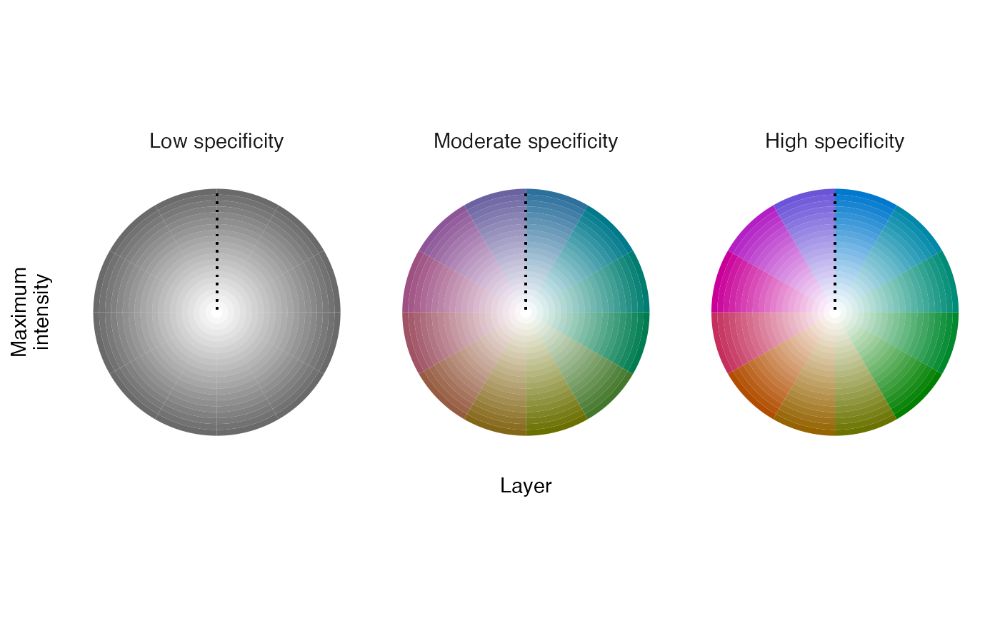

This function creates a legend to accompany a map describing a cyclical sequence of distributions.
legend_timecycle( palette, specificity = TRUE, origin_label = NULL, label_i = "Maximum\nintensity", label_l = "Layer", label_s = c("Low specificity", "Moderate specificity", "High specificity"), return_df = FALSE )
| palette | data frame containing a color palette generated by palette_timecycle. |
|---|---|
| specificity | logical indicating whether to visualize intensity and layer information for three specificity values (i.e., 0, 50, 100) or for a single specificity value (i.e., 100). Typically, a single specificity value is appropriate for map_multiples visualizations. |
| origin_label | character vector with a single element to be used as the label at the 12 o'clock position of the legend wheel. |
| label_i | character vector with a single element describing the meaning of intensity values. |
| label_l | character vector with a single element describing the meaning of layer values. |
| label_s | character vector with three elements describing differences in the meaning of three specificity values (i.e., 0, 50, 100). |
| return_df | logical indicating whether to return the legend as a
|
A ggplot2 plot object of the legend. Alternatively,
return_df = TRUE will return a data frame containing the data needed
to build the legend. The data frame columns are:
specificity: the degree to which intensity values are unevenly
distributed across layers; mapped to chroma.
layer_id: integer identifying the layer containing the maximum
intensity value; mapped to hue.
color: the hexadecimal color associated with the given layer and
specificity values.
intensity: maximum cell value across layers divided by the maximum
value across all layers and cells; mapped to alpha level.
legend_timeline for linear sequences of distributions and legend_set for distributions of distinct groups.
Other legend:
legend_set(),
legend_timeline()
# load field sparrow data data(fiespa_occ) # generate hcl palette pal <- palette_timecycle(fiespa_occ) # create legend for palette legend_timecycle(pal)